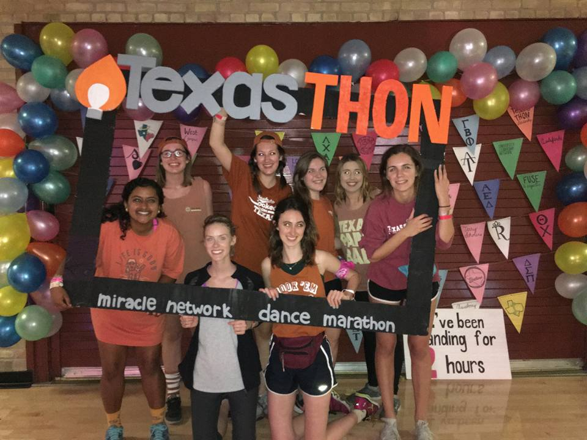
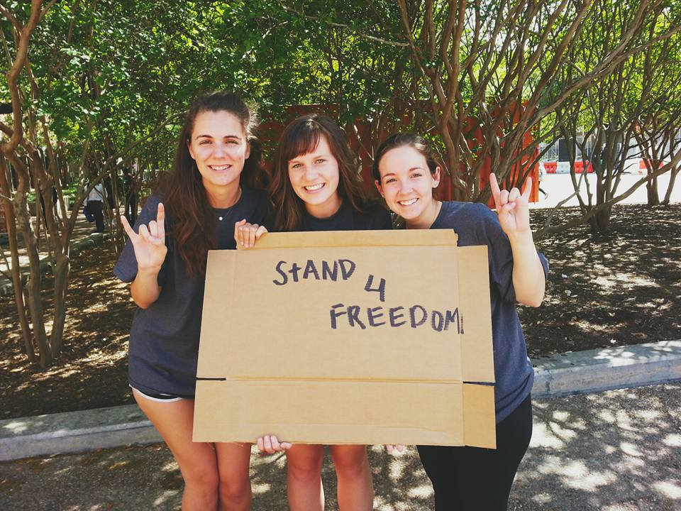
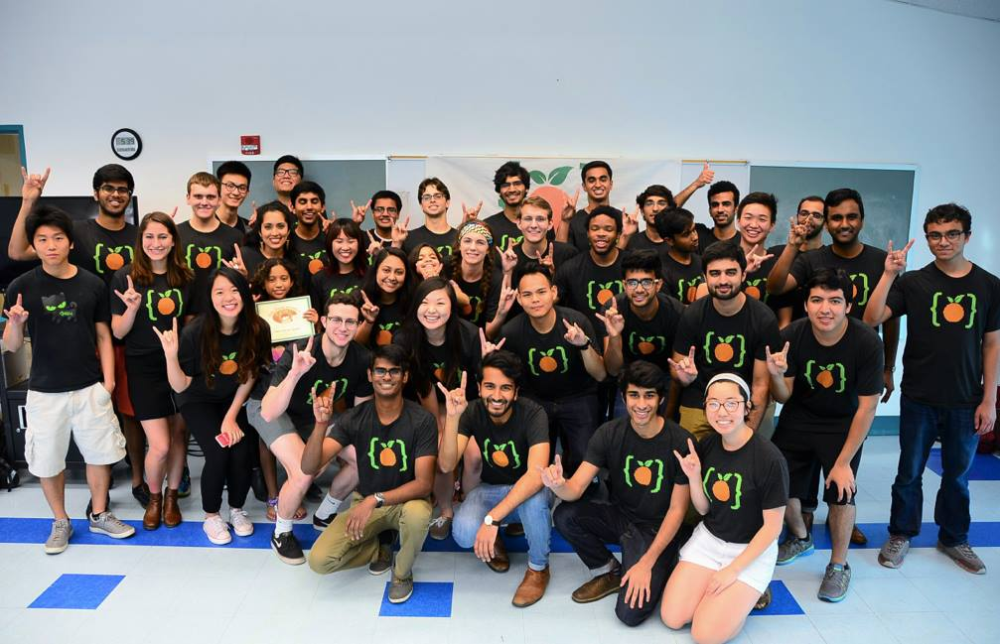

jorden jolley.
AN ONLINE PORTFOLIO
The Basics.
Rundown
I am Jorden Jolley, a junior Management Information Systems Major.
Focus
I am passionate about using technology to solve community issues.
M.O.
Critical Thinker. Explorer. Social justice warrior.
Pursuits
Internship opportunities and interesting people.
Education.
Current:
The University of Texas at Austin
Bachelor of Business Administration (BBA)
Management Information Systems
Graduation: 2018
GPA: 3.88
Work Experience.
-

Summer Immersion Program Teaching Assistant
● Gave over 20 lectures in programming (Arduinos in C++, HTML, CSS, Python, Javascript) to a class in a 7-week program in order to encourage girls to enter science and technology fields
Miami, FL
-
"Chaos"/Core Team
● Led and trained up to 17 staff members per week- over 60 staffers total - in Work Crew responsibilities
● Administered camp programs such as organization of closets for maximum efficiency and systematically arranging and delivering mail daily, allowing camp to run in an organized manner
● Facilitated retail operations and transactions in the Camp StoreTyler, TX
Extracurricular Activities.
-
.jpg) Texas Spirits
Texas Spirits
Texas Spirits is an honorary social, spirit, and service organization for students at the University of Texas at Austin. The purpose of Texas Spirits is to promote spirit among the students of the University of Texas and to serve the Austin community in the best way possible. Our four pillars are spirit, love, service, and friendship.. -

Texas THON:
Team Captain
Texas THON is a student-run philanthropy that raises awareness and funds for the Children's Miracle Network Hospitals at Dell Children's Medical Center of Central Texas, right here in Austin. As the largest student-run philanthropy in the state of Texas, we strive to make BIG miracles. -

International Justice Mission:
Longhorn Chapter International Justice Mission is an international nonprofit organization focused on human rights, laws and la w enforcement. It is currently the world's largest anti-slavery organization. -

CODE Orange:
Mentor
Code Orange is a new student organization that aims to tackle the issue of Digital Divide here in Austin through mentorship and education for children in underserved communities.